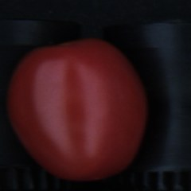
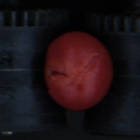
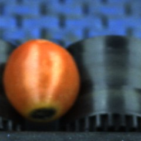
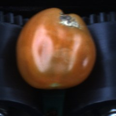
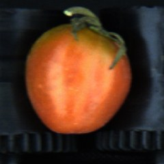
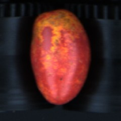
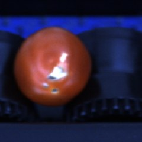
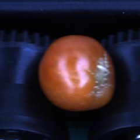

La machine regarde chaque tomate. Elle la met dans la bonne sortie.
Vous, vous réglez les limites.
Chaque tomate roule devant les caméras, puis tombe dans sa sortie.
Elle tourne sur elle-même : la machine la voit 6 fois, de dessus et des deux côtés.
La machine pose 3 questions, toujours dans cet ordre :
Le calibre, c'est la taille de la tomate, en millimètres.
Pour régler : prenez la poignée rouge et faites-la glisser.
La machine range chaque tomate dans une couleur, du vert au rouge.
Chaque couleur a un min et un max. Touchez + ou −.
Ce que la machine sait reconnaître :

Bonne
Éclatement
Nécrose
Botrytis
Pédoncule
Thrips
Tuta
CicatriceUn curseur par défaut. Il dit à partir de quand la tomate est rejetée.
Toujours ces 4 étapes :
Regardez le bandeau en haut de l'écran Prod.
| TRI EN SERVICE | Tout va bien. |
| TRI SUSPENDU | Toutes les tomates vont en sortie 0. Appuyez sur le bouton Éjection pour reprendre. |
| SOUFFLAGE COUPÉ | Aucune tomate n'est éjectée. Appelez le chef. |
| Caméra absente | Une voie trie mal. Appelez le chef. |
| MODE MAINTENANCE | Ne produisez pas. Appelez le chef. |
| IA ARRÊTÉE | Les défauts ne sont plus vus. Appelez le chef. |
Les valeurs montrées sont des exemples. Les valeurs justes sont toujours celles de l'écran.